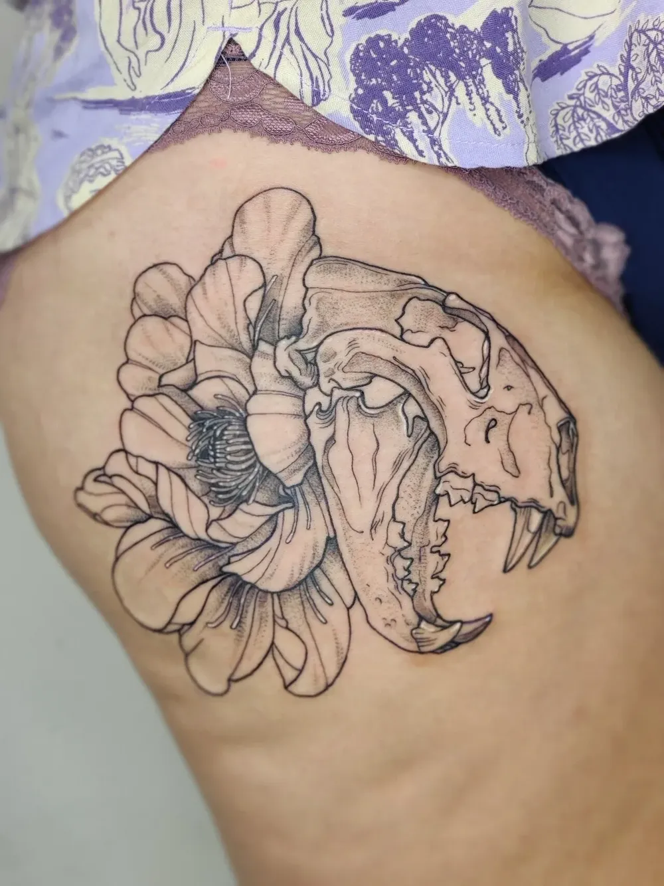
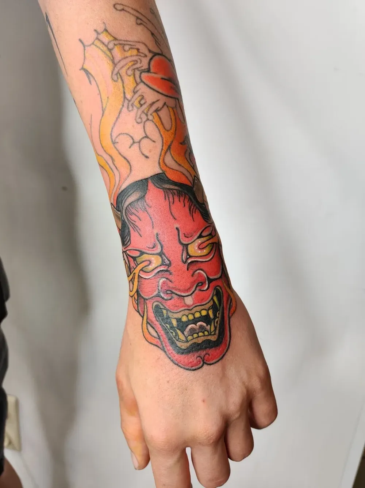
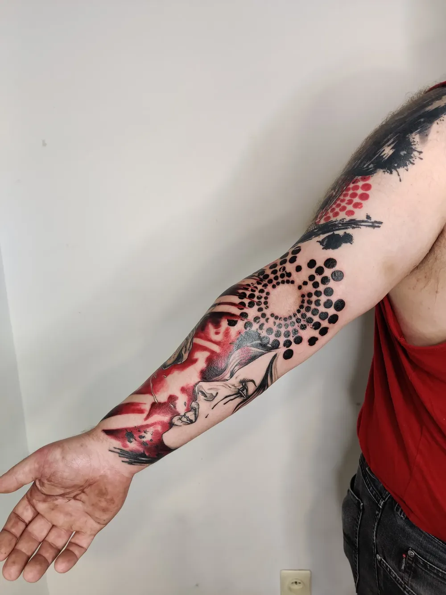
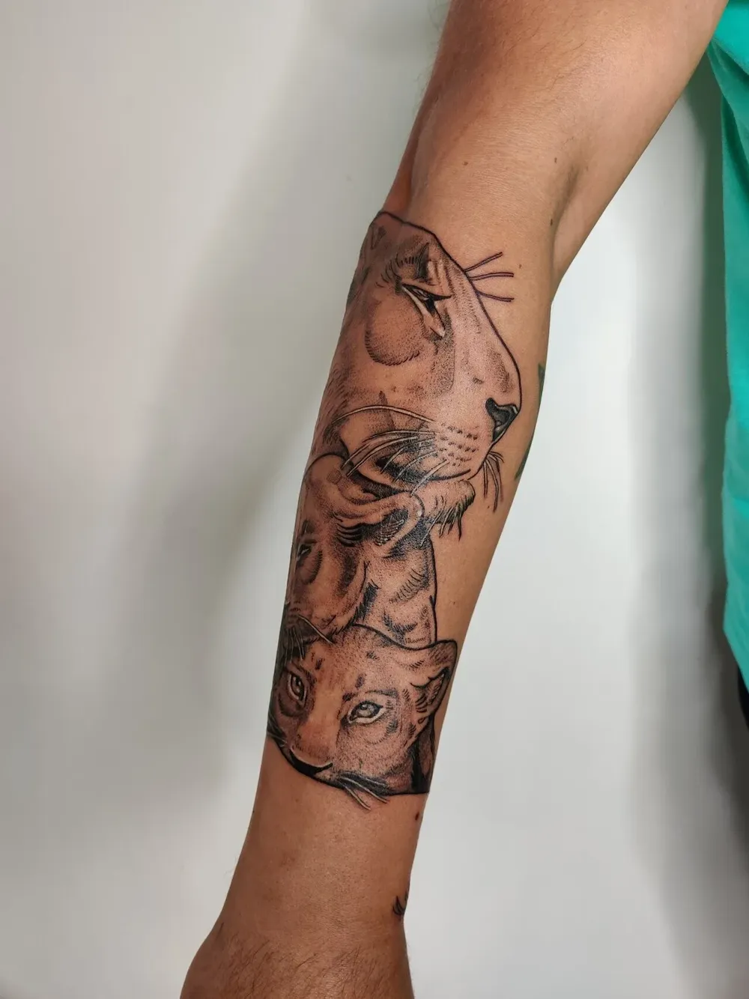
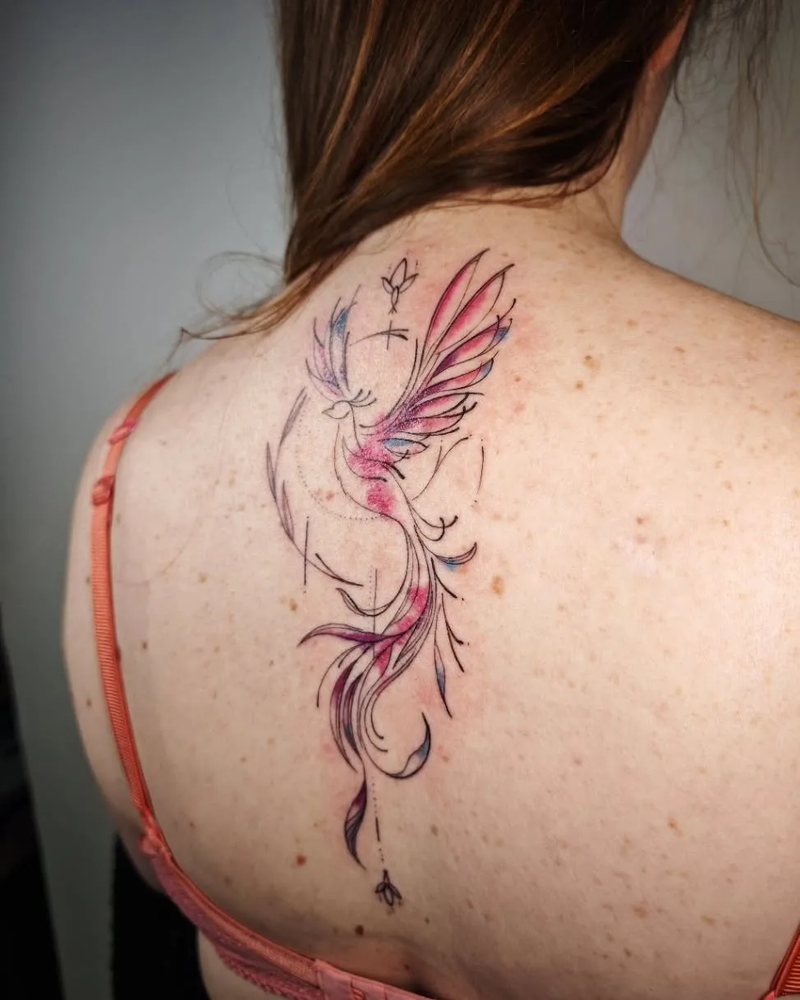
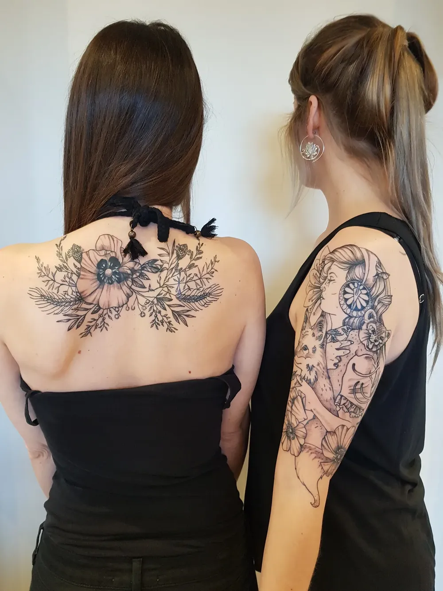
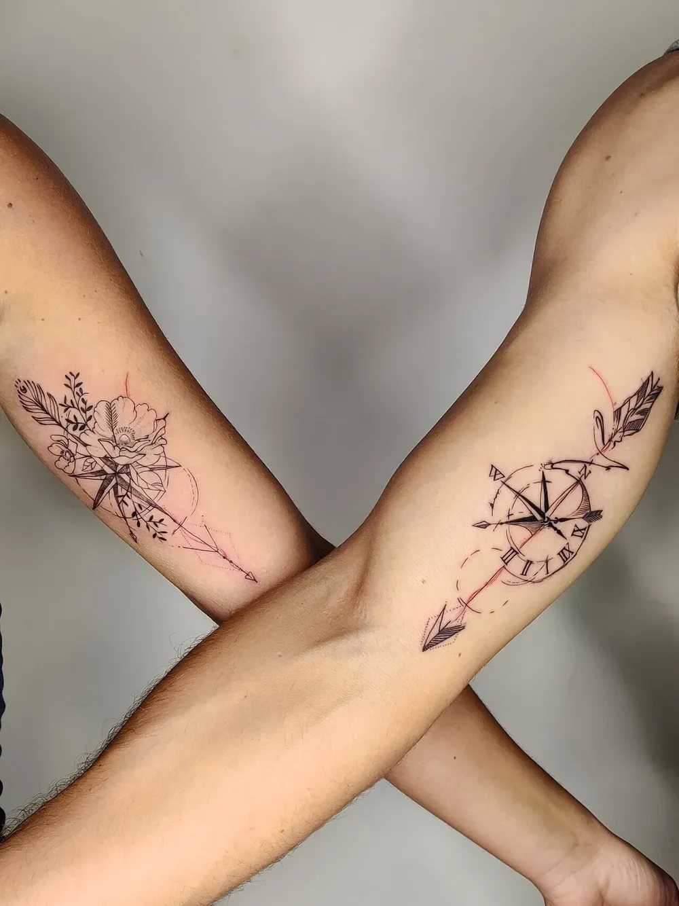
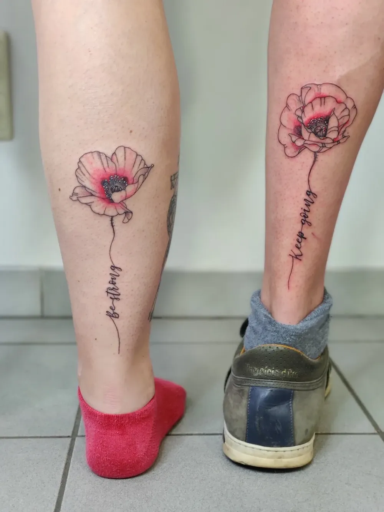
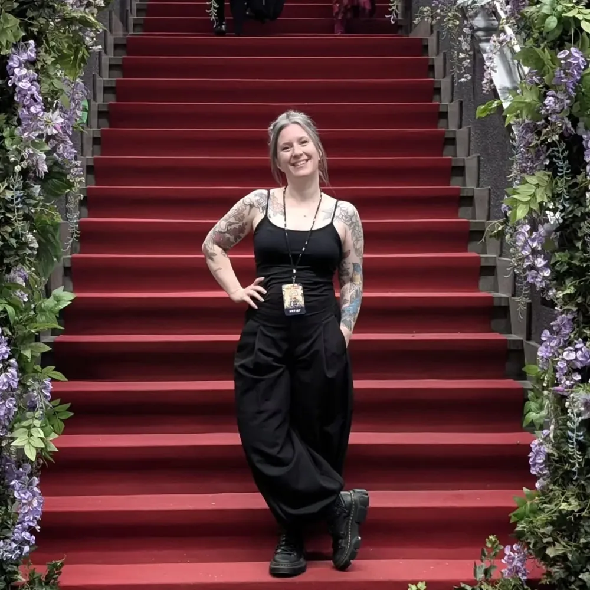

Elke stijl, met mijn eigen lijn.
Ik ben illustrator, en dat zie je in alles wat ik zet. Of je nu voor zwart gaat of voor felle kleur: breng je idee mee, de rest zoeken we samen uit.

Illustratieve blackwork
Fijne lijnen en zwart, zoals een tekening uit mijn schetsboek. Hier een dierenschedel met een pioenroos.

Neo-japanese
Een hannya-masker met vlammen, in volle kleur over hand en pols.

Trash polka
Rood en zwart, met vlakken en stippen die over je arm lopen.

Black and grey
Diepte en schaduw, zonder één druppel kleur.
Twijfel je nog?
Stuur me een paar voorbeelden die je mooi vindt, en waar het moet komen. Ik zeg je eerlijk welke stijl daar het best werkt.
- Neo-traditional
- Kleur
- Waterverf
- Koppeltattoos

"Een eerste tattoo voor deze dappere dame! Direct een redelijk groot stuk en omdat ze goed stilzat, heeft de tattoo helemaal niet zo lang geduurd."Ardie op Instagram, over deze feniks
Hoe groter het stuk, hoe liever.
Een volledige rug, een arm die helemaal mag, of een ontwerp waar nog veel in moet: daar word ik blij van. Maar ook voor een kleine eerste tattoo neem ik dezelfde tijd. Zo gaat het in de praktijk.
- 1
Je vertelt wat je wil
Stuur een mail met je idee, een paar voorbeelden en de plek op je lichaam. Hoe meer ik weet, hoe beter ik het voor je kan tekenen.
- 2
Ik teken het uit
Ik maak een ontwerp dat bij jou en je lijf past, en we passen samen aan tot het klopt.
- 3
Je kiest een moment
In mijn online planner zie je meteen wanneer ik vrij ben. Geen heen en weer gemail.
- 4
Op de stoel, en daarna
Ik leg alles vooraf uit, zodat je weet wat er komt. En ook na je afspraak mag je me altijd een vraag sturen.
Samen onder de naald.
Met je zus, je beste vriendin of je lief. Ik teken twee ontwerpen die bij elkaar horen, zonder dat ze precies hetzelfde moeten zijn.



Tattooartiest en illustrator uit Hulste.
Ik ben illustrator, en elk ontwerp in de studio komt van mijn eigen tekentafel. Mijn illustraties vind je ook terug als merch in mijn webshop.

Zelfs de eerste keer.
"Het resultaat is nog mooier geworden dan ik had gehoopt. De fijne details en het vakmanschap zijn echt indrukwekkend."
Naomi, op Google"Mijn eerste tattoo-ervaring had echt niet beter kunnen verlopen. Reinhilde heeft me van begin tot eind begeleid en op mijn gemak gesteld, wat ik enorm heb gewaardeerd."
Margaux Vanonacker★★★★★"Al meerdere tattoo's laten zetten bij Reinhilde. Ik ben altijd goed ontvangen, ik kreeg alle nodige uitleg op voorhand, alles wordt goed verzorgd en ze is altijd bereikbaar voor vragen ook nog achteraf."
Lynn Mogensen★★★★★"Ik ging bij Reinhilde voor mijn eerste tattoo. Heel aangename ervaring, legde alles goed uit en heel tevreden over haar werk."
Bart Bekaert★★★★★
Klaar voor je volgende tattoo?
Weet je al wat je wil? Kies dan meteen een moment in de planner. Twijfel je nog, stuur dan eerst je idee met een paar voorbeelden. Ik laat je weten wat mogelijk is.
De studio
- AdresKuurnsestraat 45, 8531 Harelbeke
- Gsm0472 17 57 03
- Mailreinhilde@electrictherapy.be
- OpenEnkel op afspraak